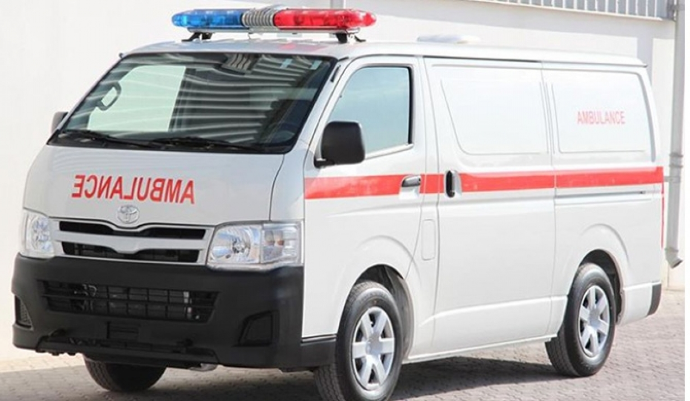
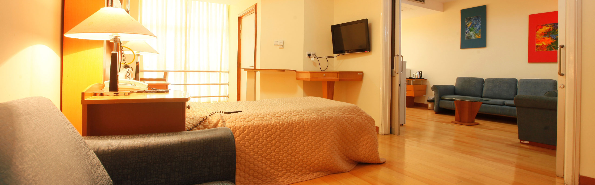
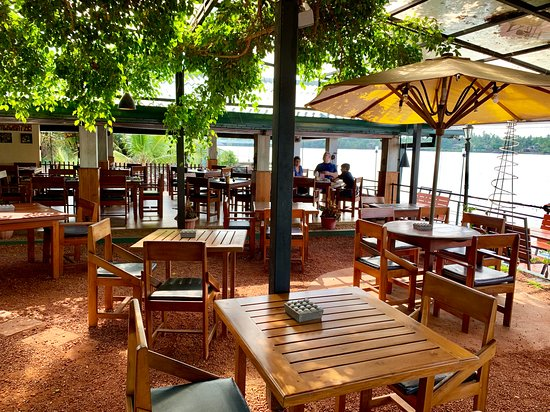

|
Channelling ServiceNew Life Hospitals provides the highest standards of clinical skills and nursing care across wide range of specialties, in association with leading specialist doctors and surgeons from across Sri Lanka and the world.
Our team of medical professionals includes some of Sri Lanka’s leading resident and non-resident medical specialists. You can simply call our call center, use Internet or walk into New Life Hospitals to make an appointment.Our consultation rooms are spacious and made for international standards with the state-of-art diagnostic facilities. The consultation rooms are located in designated, specialized, spacious and fully air conditioned OPD areas.
|
|  | Ambulance ServiceFurnished with most advance technological equipment, we provide you with a reliable ambulance experience everytime. With a qualified medical staff trained to act upon in any emergency situation, we ensure a safe and comfortable transportation to patients.Our ambulance services consists of a modern fleet of ambulances available 24 hours that are fully equipped with ventilator facilitators and monitoring technology to move patients efficiently to the hospital.
|
 |
PharmacyThe pharmacy which is opened whenever you needed is serving for both inward and outside patients. it has a compete stock of drugs including not only the commonly used but also specialised ones.
and now you have facility to order online also.
|
 |
Food & BeveragesWe believe in healthy people and what we eat is an important part of that New Life Hospital provides balanced, nutritious meals for inpatients. We provides several food and dining options for patients and visitors. Nutrition and diet play a vital role in patient treatment and care.
We offer our patients a menu of healthy meal choices prepared by highly experienced and trained cooks. Our hospital kitchen is supervised by a the Nawinna medicare management and the nutritionists to ensure excellent standards.
Our entire team is here to support our guests with a spirit of welcoming hospitality.Meals are prepared and cooked fresh each day using conventional cooking methods.
|
|  | RoomsOur patients are our key stakeholders and our intention is to provide them with the best quality of service available at a Sri Lankan hospital. |
|  | CafeThe Touching Taste Café has open air seating and serves a variety of meals from 7am to 10pm for the convenience of visitors to our hospital . |
Convenient ParkingWe do have provided a well spacious and safe car park free of charge for you as we always care about not only your medical needs, but your ease in reaching us. |
Card Paymentspayment can be made using your valid credit card for any service provided by our hospital. |
Banking & ATM FacilitiesEasy access to money is guaranteed thanks to a branch of the Bank of Ceylon with an ATM that is located within the hospital premises. |
| Services | Doctors | New Life Hospital, No.26, Galle Road , Colombo 6 |
| Facilities | Health Packages | newlifehospital@gmail.com |
| Rooms | Patient Registration | 011 2635981 |
| Food & Beverages. | Channel your doctor | 011 2635982 |
©All Right Reserved | New Life Hospital